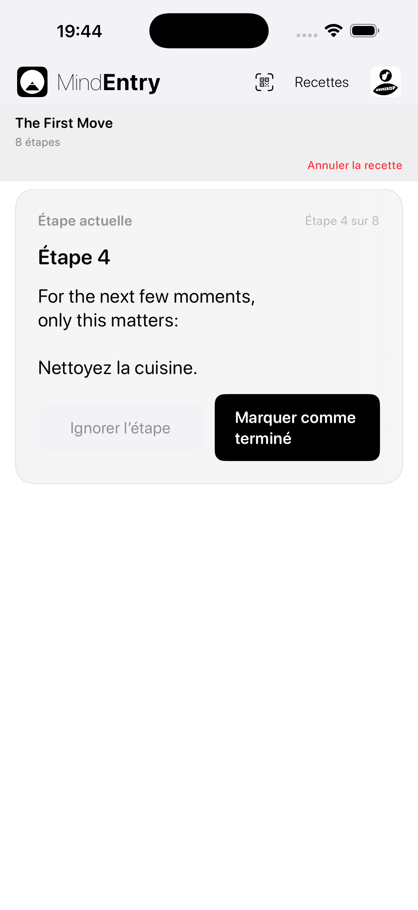
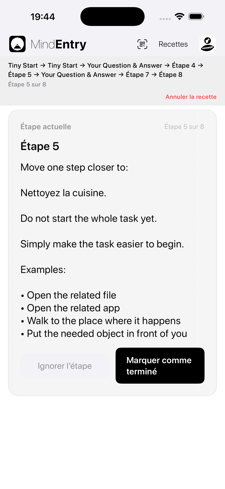
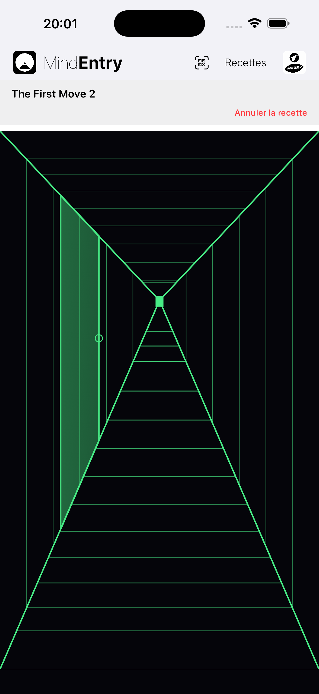
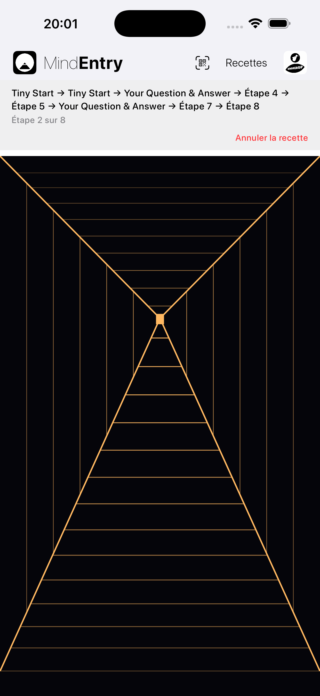

Une autre façon de parcourir une recette.
Hallway Mode est un mode d’affichage alternatif pour les recettes MindEntry.
Il ne modifie pas la recette elle-même. Il modifie la façon dont vous la parcourez.
Au lieu de passer directement d’une étape à la suivante, Hallway Mode crée un espace calme entre les étapes.
Vous avancez dans un couloir. Après une courte distance, une porte apparaît. En l’ouvrant, vous accédez à l’étape suivante.
La même recette. Une expérience différente.
Parfois, la partie la plus difficile d’une recette n’est pas l’étape elle-même. C’est de voir l’ensemble comme un processus.
Hallway Mode réduit cette friction en concentrant l’attention uniquement sur ce qui vient ensuite.
La recette devient quelque chose que l’on traverse, et non quelque chose que l’on observe.
Direct, clair et efficace.
Standard Mode présente une recette comme une suite d’étapes.
Il convient lorsque vous souhaitez le chemin le plus simple et le plus rapide à travers une recette.
Étape → Terminer → Étape suivante
Standard Mode est utile lorsque l’esprit est prêt à suivre une structure de manière directe.


Un espace calme entre les étapes.
Hallway Mode ajoute du mouvement entre les étapes.
Le couloir commence sans porte visible. Vous avancez. Après une courte distance, variable à chaque fois, une porte apparaît. En touchant la poignée, l’étape suivante s’ouvre.
Étape → Avancer → Porte → Étape suivante
La porte suivante apparaît après quelques mouvements vers l’avant. La distance varie d’une étape à l’autre, ce qui donne moins l’impression d’une liste à cocher que d’un passage guidé.
Vous ne choisissez pas entre plusieurs portes. Vous ne revenez pas en arrière. Vous ne sautez pas d’étapes. Le couloir vous conduit simplement vers ce qui vient ensuite.


Une même étape peut être ressentie différemment selon la façon dont on y arrive.
Lorsque l’esprit est clair, une liste peut sembler utile.
Lorsque l’esprit est figé, submergé ou résistant, une liste peut sembler être un poids supplémentaire.
Hallway Mode transforme la question :
Combien d’étapes reste-t-il ?
en :
Où est la prochaine porte ?
Ce petit changement peut réduire la friction cognitive.
Au lieu de demander à l’utilisateur de gérer toute la séquence, Hallway Mode donne à l’esprit une seule action simple :
Avancer.
Les recettes interactives peuvent ressembler moins à un formulaire et davantage à un parcours guidé.
Les Stateful Recipes peuvent réagir à ce que vous saisissez ou choisissez pendant leur exécution.
En Standard Mode, cette interaction peut ressembler à un flux structuré :
Question → Réponse → Étape suivante
En Hallway Mode, cette même interaction peut davantage ressembler à un passage guidé :
Porte → Question → Avancer → Porte suivante
Cela est particulièrement important lorsque l’esprit est bloqué.
Un esprit bloqué n’a souvent pas besoin de davantage d’options. Il a besoin d’un prochain mouvement plus petit.
Hallway Mode maintient l’aspect interactif de la recette sans obliger l’utilisateur à garder toute la structure en tête.
La plupart des applications se concentrent sur les étapes elles-mêmes.
Hallway Mode se concentre sur l’espace entre elles.
Cet espace permet à l’étape précédente de se terminer avant que la suivante ne commence.
La recette continue de s’exécuter dans MindEntry. Les étapes fonctionnent toujours de la même manière. La différence réside dans la façon dont l’esprit arrive à chacune d’elles.
Hallway Mode ne rend pas une recette plus facile en supprimant des étapes.
Il rend simplement la prochaine étape plus facile à aborder.
Copyright © 2026 MINDBEBOP — All rights reserved.